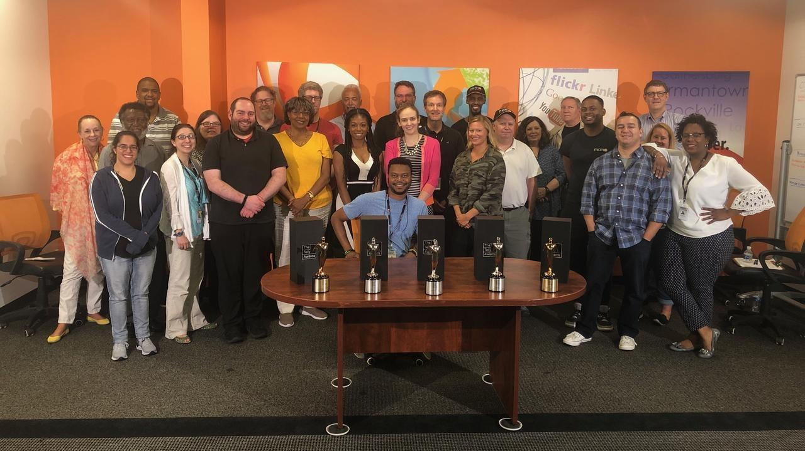

As a journalism major, I discovered my passion for getting to know people and their stories during highschool as a part of the yearbook staff. My journalism speciality is profile and feature writing. I have written for multiple publications throughout my college career. I started off writing for UMD's Odyssey Online, then I became the Editor in Chief and staff writer for Unwind Magazine where I wrote for the Humans of UMD column. I currently write for Her Campus Maryland writing focusing on the women on campus's stories and passions through profile stories.
For internships, I have interned for the MoCo Show, a popular blog in Montgomery County that focuses on county history and its new updates. I wrote for the column, “Humans of MoCo,” and wrote profile stories on people in the county. I have also interned for Montgomery Community Media where I wrote local community stories focusing on the people aspect. I draw my inspiration from the Humans of New York blog and hope to continue finding people's stories and writing in my future career.
